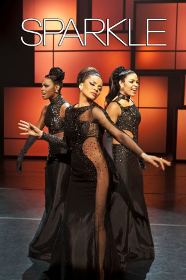

#10687 Sparkle
 
 IMDB-Wertung: 5.7 / 10
IMDB-Wertung: 5.7 / 10  Tomatometer: 57
Tomatometer: 57  Metascore: 54
Metascore: 54 
Detroit zu Zeiten des legendären Motown: Die talentierte junge Sparkle, eine aufstrebende Sängerin, schließt sich mit ihren beiden Schwestern zusammen, um als Gesangstrio ihren musikalischen Durchbruch zu schaffen. Mit großem Einsatz und Stimmgewalt stehen sie schon bald auf diversen Bühnen. Doch der Weg zum Ruhm ist lang und steinig und ihre strenge Mutter Effie, selbst eine einst begabte, wenn auch erfolglose Sängerin, versucht ihre Töchter von deren Vorhaben abzubringen, in der Hoffnung, dass ihre eigenen Fehler nicht durch ihre Kinder wiederholt werden. Unterstützung erhalten die Schwestern vom Musikproduzenten Stix, der besonders von Sparkle hingerissen ist. Doch der wachsende Erfolg, Eifersucht und Drogenmissbrauch drohen, die Familie auseinanderzureißen.
Jahr: 2012
Dauer: 116 Minuten
FSK: 12
Land: USA Studio: Sony Pictures ReleasingTonspuren: DTS - ,
Untertitel: Deutsch,
Auflösung: 1080p (1920x800) Größe: 6174 MB
Genre: Drama, Musik
Regisseur: Salim Akil
Drehbuch: Mara Brock Akil, Joel Schumacher, Howard Rosenman
Soundtrack: Salaam Remi
Darsteller:
- Jordin Sparks als Sparkle
- Whitney Houston als Emma
 Derek Luke als Stix
Derek Luke als Stix Mike Epps als Satin
Mike Epps als Satin Carmen Ejogo als Sister
Carmen Ejogo als Sister Tika Sumpter als Dolores
Tika Sumpter als Dolores Omari Hardwick als Levi
Omari Hardwick als Levi- CeeLo Green als Black
 Curtis Armstrong als Larry
Curtis Armstrong als Larry- Terrence Jenkins als Red
- Tamela J. Mann als Ms. Sara Waters
 Michael Beach als Rev. Bryce
Michael Beach als Rev. Bryce- Brely Evans als Tune Ann
 Linda Boston als Sister Clora
Linda Boston als Sister Clora- Sidi Henderson als Mr. Bell
- Erika Hoveland als Larry's Secretary
- Mark Rademacher als Filmore Manager
- Howard Rosenman als Landlord
 Robert Forte Shannon III als Stix's Opponent
Robert Forte Shannon III als Stix's Opponent- Goapele Mohlabane als Girl Group - Lead Singer
- Stephanie Moseley als Rehearsal Dancer
- Ruth E. Carter als Sugar
- Melora Rivera als Hussy
- Lynn Anderson als Columbia Records Executive (uncredited)
- Delaney Baynham II als Church Member (uncredited)
- Helena Ellison als Audience Member (uncredited)
- Steve Gast als Officer McKenzie (uncredited)
- Brett Hendrix als Bar Patron (uncredited)
- Rose Anne Nepa als Patron in Audience (uncredited)
- Terri Partyka als Orchestra Timpanist (uncredited)
- Jor él Quinn als Club Patron (uncredited)
- Debra Port als Receptionist
- Kem als Buddy
- Sarah Hansen als Heckler
- Doug Mingo als Goofy Guy
- David Regal als Stage Manager
- Cory Pritchett als Ham
- Margaret Scott als Church Saint
- Fatima Morris als Girl Group - Back Up Singer #1
- Keeley Morris als Girl Group - Back Up Singer #2
 Brittany Perry-Russell als Sparkle's Back Up Singer #1
Brittany Perry-Russell als Sparkle's Back Up Singer #1- Charmaine Jordan als Sparkle's Back Up Singer #2
- Dalibor Stolevski als TV Host
- Tiffany Alexander als Prison Guard
- Temecha Myers als Rehearsal Dancer
- Corey Bolls als Bar Audience
- Arnold Agee als Bar Patron (uncredited)
- Eligah Alexander Jr. als Patron in Audience (uncredited)
- Ward Beard als Bartender (uncredited)
- Toya D. Brazell als Woman With Wig (uncredited)
Datei: X:\2012(N-Z)\Sparkle (2012, FSK12, 1920x800).mkv seit 21.02.2019
Festplatte: HD 2012(N-Z)-2013(A-H)
 Es gibt insgesamt 138 Filme in der Gruppe '2012(N-Z)'
Es gibt insgesamt 138 Filme in der Gruppe '2012(N-Z)'